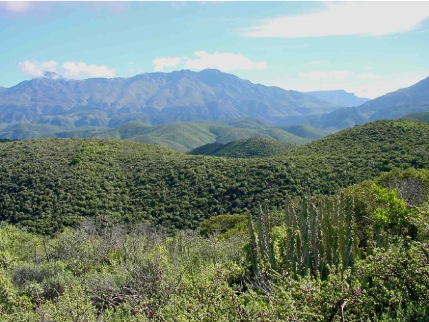
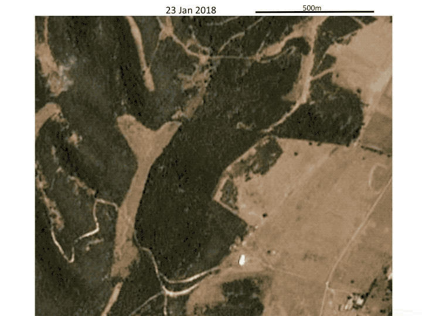
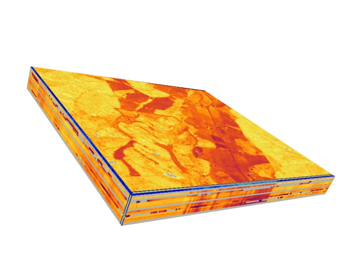
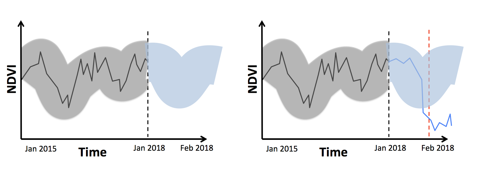
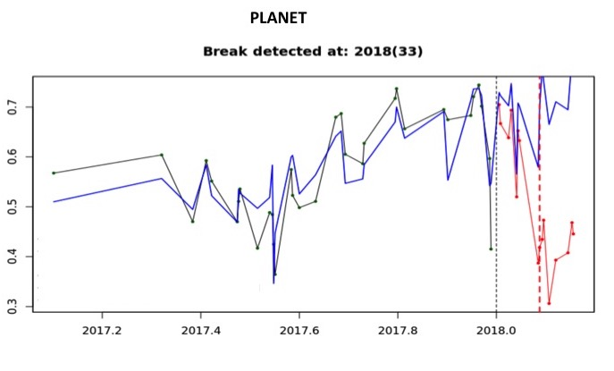

Real-time detection of land cover change
Detecting vegetation clearing using Sentinel 2 time series.
If you were to judge by media coverage climate change and poaching would probably rank as the biggest threats to biodiversity globally. Yet when systematically assessed, the most important factor causing the massive declines in species across all ecosystems both terrestrial and aquatic is habitat transformation. In South Africa's terrestrial ecosystem the same is true. High rates of irreversible change to natural ecosystems is ongoing and loss of natural habitat continues to be the leading threat to terrestrial biodiversity.
A range of tools are available to aid in mapping and monitoring land cover change. Global Forest Watch is an amazing tool developed by the World Resources Institute for monitoring deforestation worldwide. They continuously update maps of where deforestation is occurring based upon data collected by the USGS/NASA satellite Landsat. While this is a great tool, it is not designed with South Africa's ecosystems in mind, and thus has limited applicability. South Africa has a national land cover map tracking the distribution of a range of natural and non-natural land cover types based upon the same Landsat data as Global Forest Watch. The problem with the national land cover map is that is is only updated every 5-10 years on a somewhat ad hoc basis. It allows us to report on the rate at which habitats are being destroyed, but neither it nor Global Forest Watch (which provides updates every year) produce information fast enough to inform interventions that could halt habitat destruction while it is happening. Enforcement authorities are in particular need of information that might help them to catch land owners in the act of illegally transforming natural vegetation, as currently only 5% of investigated cases end in a successful prosecution.
Newly launched satellite platforms have reduced the time between image acquisitions and increased image resolution to the point that it is now possible to detect land transformation within days of its occurrence. Sentinel 2 - launched by the European Space Agency (ESA) on the 23rd of June 2015 consists of 2 satellites capable of revisiting any place on earth every 5 days and producing images at 10 meter spatial resolution. Even more detail is available from the constellation of almost 200 microsatellites owned by Planet Inc. Planet's satellites reimage the Earth every day at 3 meter resolution. ESA's open data policy makes it possible to monitor large areas using their data as it comes at no cost, while Planet provides a limited amount of data for free to academic users allowing focused monitoring over key areas.
I set out to test how rapidly land transformation could be detected using these two platforms in an area of South Africa that is undergoing rapid irreversible land cover change. The Albany Thicket biome is a part of a global biodiversity hotspot and home to an amazing array of indigenous plants and animals - many of which are of immense economic, cultural and spiritual value to local people.

Enforcement authorities have reported high rates of illegal vegetation clearing across the biome, but an area of particular concern surrounds the town of Alexandria near Port Elizabeth, where patches of thicket and forest undisturbed for thousands of years are being cleared for diary pasture at an alarming rate. I identified a small area where a patch of vegetation had recently been cleared and set myself the task of attempting to automate the detection of this change within days of its occurrence. Here you can see a timelapse covering the period from the 23rd of January to the 2nd of February 2018. From this imagery is is apparent that the vegetation was cleared around the 1st of February. (Disclaimer: I make no allegations about the legality of this vegetation clearing. It is possible that what this landowner did is entirely legal)

All the code to reproduce my analysis is available at this github repo. But here is a quick breakdown of how I went about this:
First I downloaded all the data available for this area from Planet and Sentinel 2 from when their records began until the 31st of March 2018 - about 2 months after the clearing event. This amounts to about 2 years of data for each. In the end I had around 120 images to analyse from Planet and 50 from Sentinel 2. Then I needed to correct the raw data from level 1 data, or what the sensor sees at the top of the atmosphere, to surface reflectance - what the earth's surface looks like without the interference of the atmosphere. This is done by correcting the data for the effect of things like clouds, haze, the varying angle and intensity of the sun's illumination, and topography. Fortunately Planet have done this for me already and I can simply download their surface reflectance data. Sentinel provide a tool Sen2Cor which you can run on level 1 imagery to calculate surface reflectance.
Using the processed surface reflectance data I calculate a measure of vegetation greeness called NDVI or Normalized Difference Vegetation Index. NDVI is a measure of how much photosynthetic activity there is. A high NDVI value (near 1) indicates lush vegetation like a forest, while a low value (around 0.2) indicates bare soil. A sudden drop in NDVI suggests a reduction in photosynthesis, and may be related to vegetation loss. After downloading all the data, processing it to surface reflectance and calculating NDVI I end up with a stack of NDVI images for a series of dates across the region I wish to monitor.

These data are the basis upon which we detect land transformation using an algorithm called BFAST (Breaks For Additive Season and Trend). BFAST works by defining in a period in which we know vegetation to be stable and not subject to transformation. The trends and behaviour of NDVI through time within this period are used to build of model of what the expected pattern ought to look like if this vegetation where to continue to function similarly. We then project expected NDVI patterns into the future and compare these to new data as they are acquired. If the new data exceeds our expectations by some threshold we flag this as an anomaly and a potential case of land cover change.

This is the procedure that was followed using the Sentinel 2 and Planet data. We build models using data up to the 31st of December 2018 and monitored change from the 1st of January 2018 onwards. Using the Planet data I was able to detect the land transformation we were interested in within 1 to 2 days of its occurrence! The breakpoint is detected on day 33 of the year - or the 2nd of Feb. Remember the raw images showed the change occurring on the 1st. This is what the actual data look like:

Running this over the whole area of interest shows how we can accurately outline the clearing and automate the detection of areas that are cleared. The timelapse shows when the detection occurs by highlighting the cleared area - a day after it occurs!.
This process is not perfect. You can see how we outline some areas that have not been transformed, and similarly, it is likely that we will fail to detect some areas that have been cleared.
It takes around a month after clearing to detect the event using Sentinel data, but it also provides a good outline of areas that have changed during the monitoring period. By the 13th of March clearing had been accurately detected in the areas we are concerned with, and an additional area to the north that I had not been previously aware of
I think this is really promising. Satellite imagery has advanced enormously in the last few years. We are now at a point where we have the imagery available to identify land cover change within days of its occurrence. Of course it is not possible to manually look through images and search for change each day, thus we need algorithms like those I have demonstrated to help with this process. I don't think we can fully automate this, there will always be the need for humans in the loop to confirm detection and throw away false positives. We have some grants that are currently being reviewed in which we propose to further develop this technology and roll it out over large areas. If things come together you will see this approach in a thicket near you soon.